Candidate List 20260319 Previous Day Next Day Section 1: New Sources (age<1d) Cosmological Afterglow
Section 2: Old (1-5d) sources observed last night placeholder
Section 1: New Afterglow/FBOT Cands Last Night (4)
1. ZTF26aamxifs (FBOT?) [Back to Top] [Share] [Trigger Swift] [Fritz ] [Lasair ]RA, Dec: 125.8384, 4.79686 8h23m21.22s, 4d47m48.69sGalactic (l, b): 219.33562, 22.60392 ext(g-r) = 0.027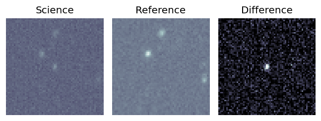
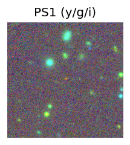
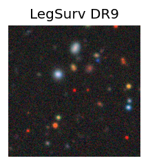
peak abs mag = -24.74 LegacySurvey: 1 sources in 3 arcsec Closest: d = 0.25 arcsec, 340.5 deg (east of north) photoz=0.9 (68% bounds 0.6, 1.06), type=PSF peak abs mag = -24.39 (68% bounds -23.31, -24.82) 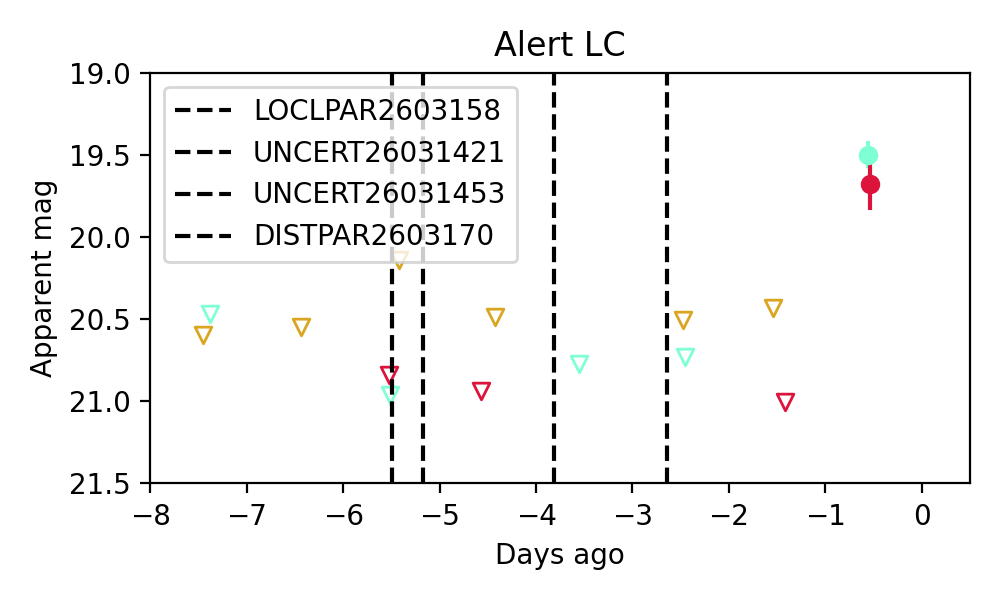
2. ZTF26aamyblz (Afterglow?) [Back to Top] [Share] [Trigger Swift] [Fritz ] [Lasair ]RA, Dec: 107.8963, 11.90928 7h11m35.11s, 11d54m33.39sGalactic (l, b): 204.49985, 9.82 ext(g-r) = 0.108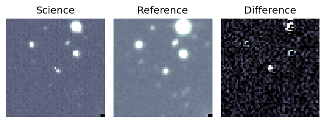
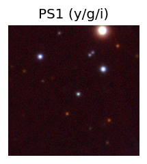
PS1: 1 source in 3 arcsec Closest: d = 2.81 arcsec photoz=0.97+/-0.38 peak abs mag = -24.75 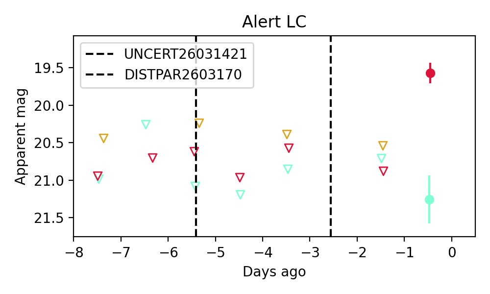
Consistent with synchrotron, g-r>0!
3. ZTF26aamydwj (Afterglow?) [Back to Top] [Share] [Trigger Swift] [Fritz ] [Lasair ]RA, Dec: 101.42767, 19.59781 6h45m42.64s, 19d35m52.12sGalactic (l, b): 194.75338, 7.58484 WARNING: -3.41 deg from ecliptic plane ext(g-r) = 0.164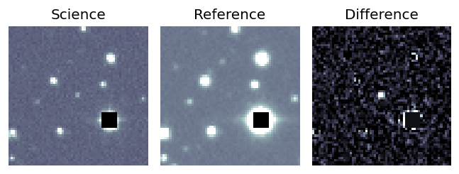
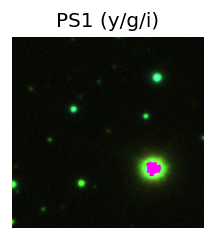
PS1: 1 source in 3 arcsec Closest: d = 0.08 arcsec photoz=0.76+/-0.22 peak abs mag = -24.05 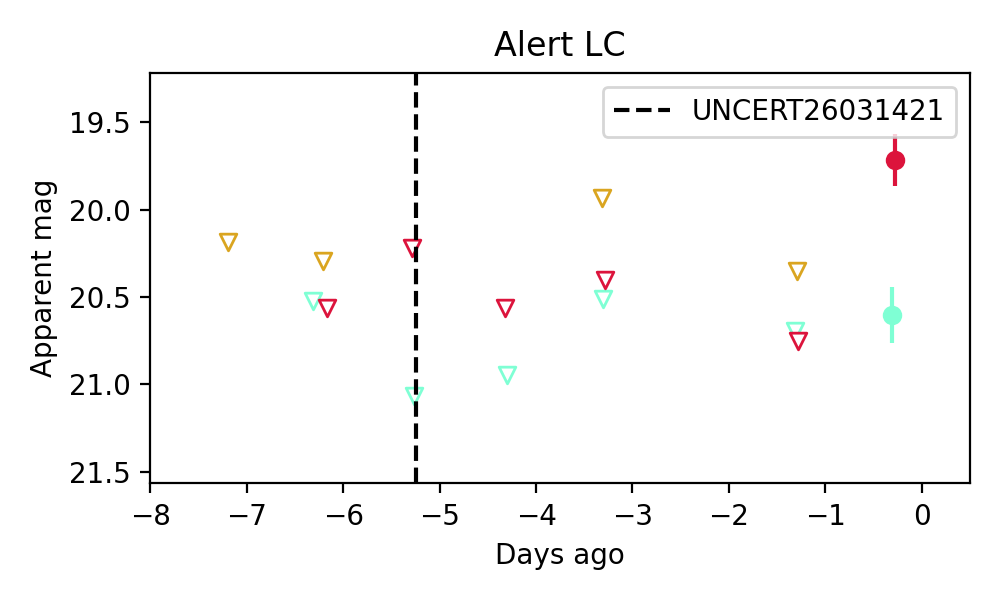
Consistent with synchrotron, g-r>0!
4. ZTF26aangeel (Afterglow?) [Back to Top] [Share] [Trigger Swift] [Fritz ] [Lasair ]RA, Dec: 214.0356, 11.02264 14h16m8.54s, 11d 1m21.52sGalactic (l, b): 358.05003, 64.39088 ext(g-r) = 0.025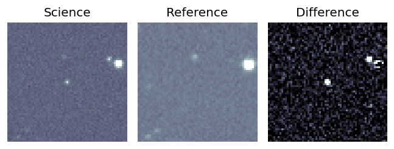
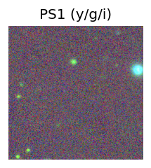
LegacySurvey: 1 sources in 3 arcsec Closest: d = 4.85 arcsec, 91.2 deg (east of north) photoz=1.08 (68% bounds 0.84, 1.33), type=REX peak abs mag = -25.17 (68% bounds -24.51, -25.75) 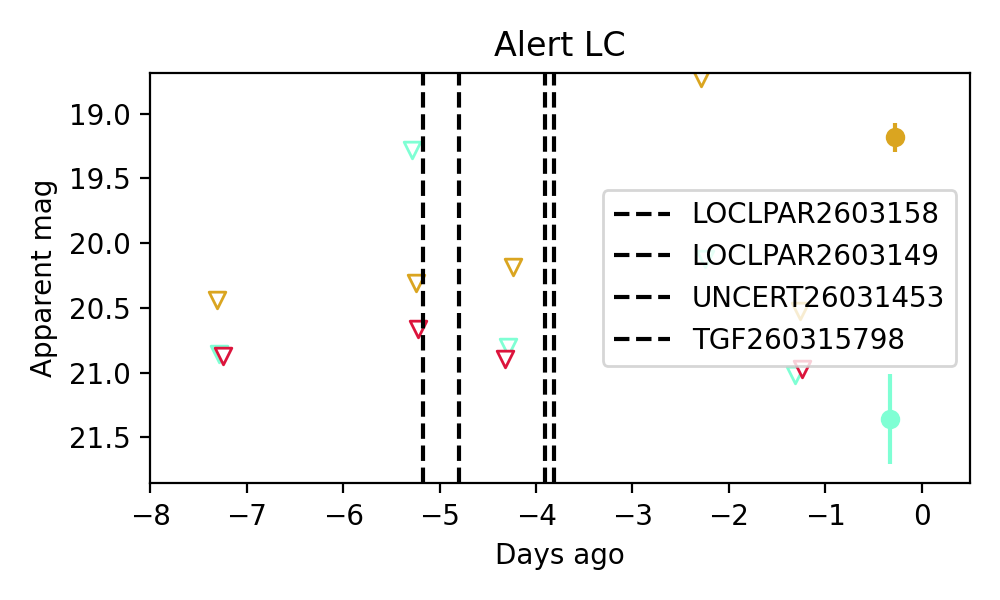
Consistent with synchrotron, g-r>0!
Section 2: Older Sources Observed Last Night (26)
0. ZTF26aakmadn (FBOT?) [Back to Top] [Share] [Trigger Swift] [Fritz ] [Lasair ]RA, Dec: 105.75282, 39.24515 7h 3m0.68s, 39d14m42.53sGalactic (l, b): 177.75165, 18.86046 ext(g-r) = 0.094LegacySurvey: 1 sources in 3 arcsec Closest: d = 5.38 arcsec, 143.4 deg (east of north) photoz=0.04 (68% bounds 0.02, 0.14), type=REX peak abs mag = -20.0 (68% bounds -18.11, -23.0)
1. ZTF26aakrsai (FBOT?) [Back to Top] [Share] [Trigger Swift] [Fritz ] [Lasair ]RA, Dec: 225.25303, 28.90354 15h 1m0.73s, 28d54m12.75sGalactic (l, b): 44.15935, 61.43542 ext(g-r) = 0.02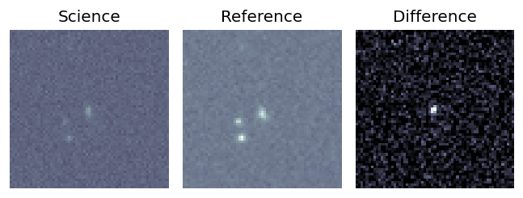
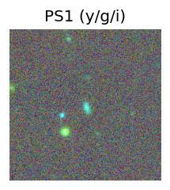
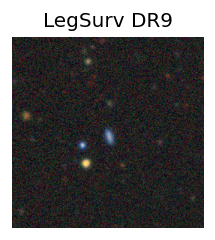
peak abs mag = -20.07 LegacySurvey: 1 sources in 3 arcsec Closest: d = 1.67 arcsec, 197.4 deg (east of north) photoz=0.09 (68% bounds 0.05, 0.12), type=SER peak abs mag = -19.46 (68% bounds -18.18, -20.22) 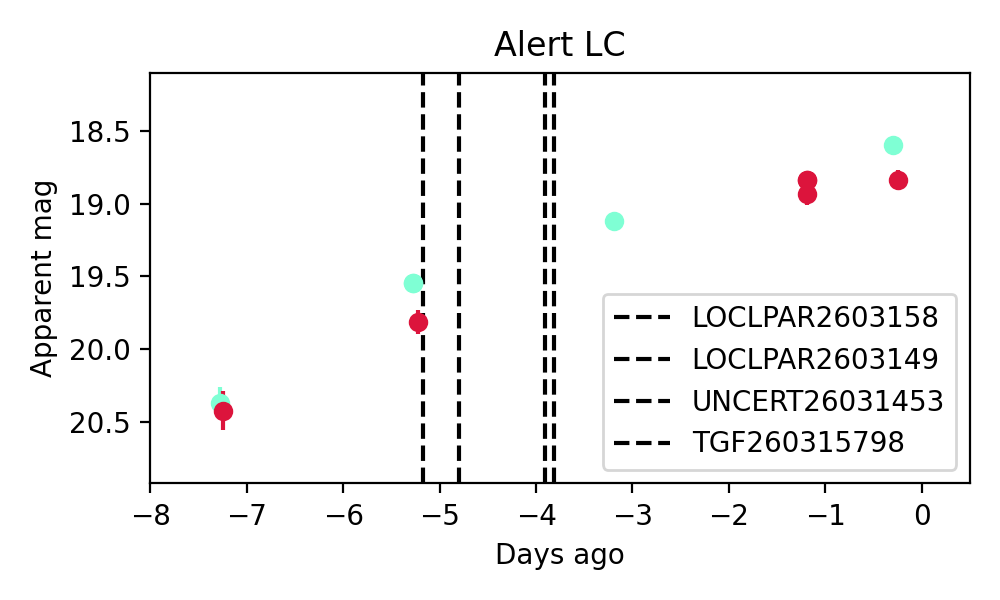
2. ZTF26aaktvhd (FBOT?) [Back to Top] [Share] [Trigger Swift] [Fritz ] [Lasair ]RA, Dec: 56.98331, -5.76567 3h47m55.99s, -5d-45m-56.41sGalactic (l, b): 194.0988, -42.95646 ext(g-r) = 0.081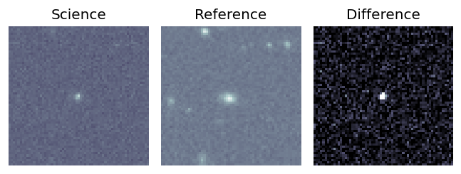
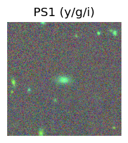
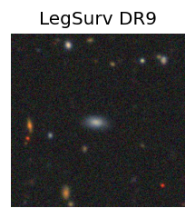
peak abs mag = -20.34 LegacySurvey: 1 sources in 3 arcsec Closest: d = 1.24 arcsec, 143.8 deg (east of north) photoz=0.1 (68% bounds 0.07, 0.12), type=SER peak abs mag = -19.44 (68% bounds -18.68, -19.94) 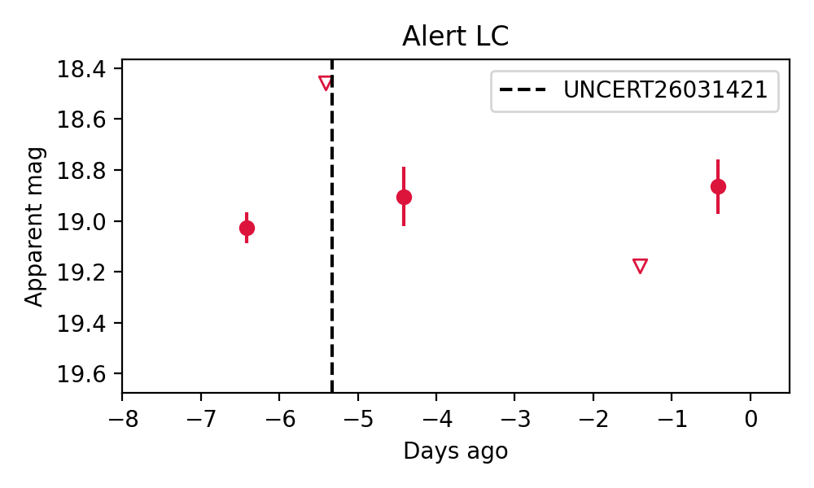
3. ZTF26aalcpif (Afterglow?) [Back to Top] [Share] [Trigger Swift] [Fritz ] [Lasair ]RA, Dec: 171.58099, 8.78076 11h26m19.44s, 8d46m50.73sGalactic (l, b): 251.31202, 62.77331 WARNING: 4.73 deg from ecliptic plane ext(g-r) = 0.063LegacySurvey: 1 sources in 3 arcsec Closest: d = 0.12 arcsec, 180.6 deg (east of north) photoz=0.81 (68% bounds 0.09, 1.11), type=PSF peak abs mag = -29.32 (68% bounds -23.94, -30.16)
4. ZTF26aalochb (Afterglow?) [Back to Top] [Share] [Trigger Swift] [Fritz ] [Lasair ]RA, Dec: 129.47211, 31.00865 8h37m53.31s, 31d 0m31.14sGalactic (l, b): 192.6342, 35.21237 ext(g-r) = 0.047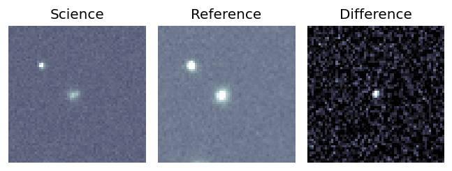
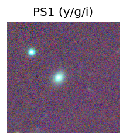
peak abs mag = -19.31 LegacySurvey: 1 sources in 3 arcsec Closest: d = 2.47 arcsec, 107.2 deg (east of north) photoz=0.08 (68% bounds 0.07, 0.09), type=SER peak abs mag = -18.64 (68% bounds -18.39, -18.84) 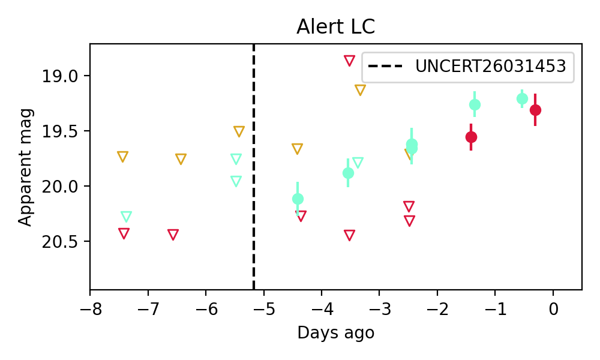
Consistent with synchrotron, g-r>0!
5. ZTF26aalqabk (FBOT?) [Back to Top] [Share] [Trigger Swift] [Fritz ] [Lasair ]RA, Dec: 152.03154, 17.79744 10h 8m7.57s, 17d47m50.79sGalactic (l, b): 218.11738, 51.31346 ext(g-r) = 0.04LegacySurvey: 1 sources in 3 arcsec Closest: d = 0.33 arcsec, 208.2 deg (east of north) photoz=0.23 (68% bounds 0.11, 0.49), type=REX peak abs mag = -20.68 (68% bounds -18.95, -22.57)
6. ZTF26aaltcet (Afterglow?FBOT?) [Back to Top] [Share] [Trigger Swift] [Fritz ] [Lasair ]RA, Dec: 242.68485, 10.29906 16h10m44.36s, 10d17m56.60sGalactic (l, b): 23.09836, 40.27233 ext(g-r) = 0.056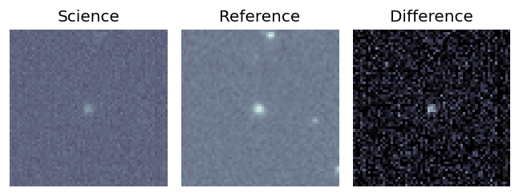
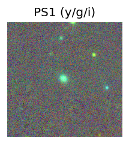
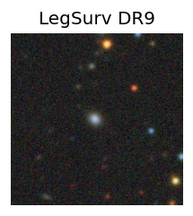
peak abs mag = -20.02 LegacySurvey: 1 sources in 3 arcsec Closest: d = 0.79 arcsec, 92.6 deg (east of north) photoz=0.11 (68% bounds 0.08, 0.14), type=SER peak abs mag = -19.3 (68% bounds -18.46, -19.79) 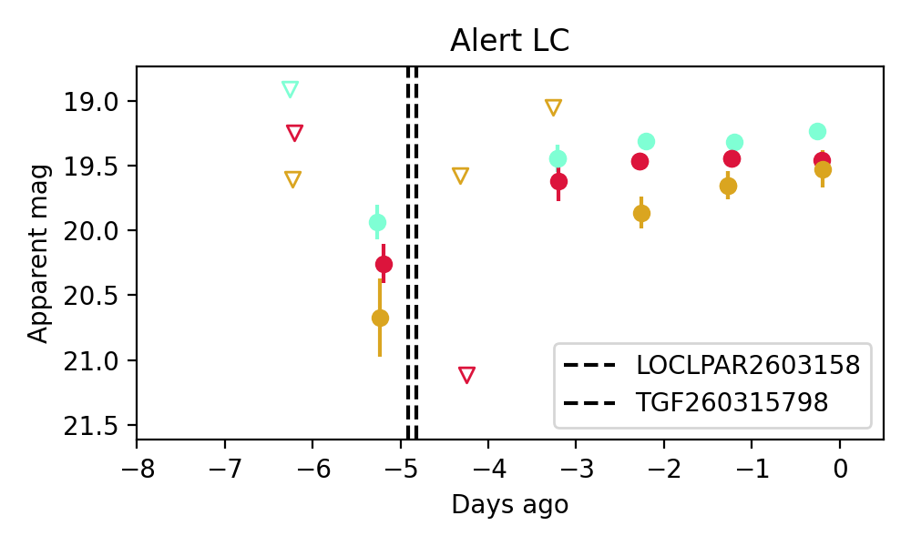
7. ZTF26aaltsvo (Afterglow?FBOT?) [Back to Top] [Share] [Trigger Swift] [Fritz ] [Lasair ]RA, Dec: 215.4933, 36.2721 14h21m58.39s, 36d16m19.55sGalactic (l, b): 64.04047, 68.75368 ext(g-r) = 0.01peak abs mag = -20.07 LegacySurvey: 1 sources in 3 arcsec Closest: d = 0.88 arcsec, 256.9 deg (east of north) photoz=0.09 (68% bounds 0.09, 0.1), type=SER peak abs mag = -19.91 (68% bounds -19.7, -20.06)
8. ZTF26aalvaov (Afterglow?) [Back to Top] [Share] [Trigger Swift] [Fritz ] [Lasair ]RA, Dec: 60.3436, 15.06657 4h 1m22.46s, 15d 3m59.64sGalactic (l, b): 176.3159, -27.53207 ext(g-r) = 0.379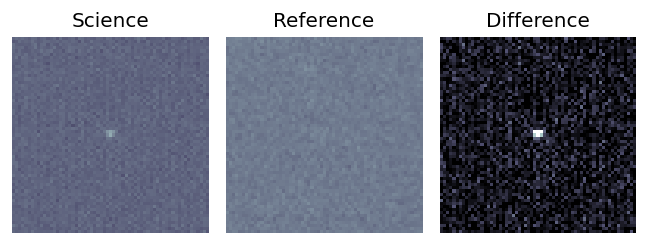
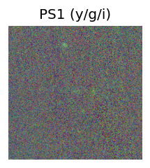
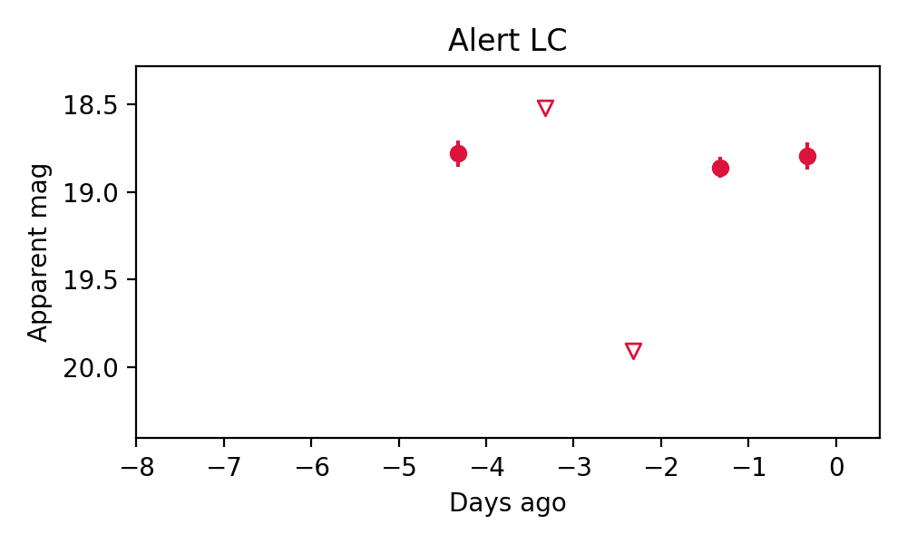
9. ZTF26aamfxlb (FBOT?) [Back to Top] [Share] [Trigger Swift] [Fritz ] [Lasair ]RA, Dec: 118.88026, 51.93478 7h55m31.26s, 51d56m5.20sGalactic (l, b): 166.49511, 30.69327 ext(g-r) = 0.058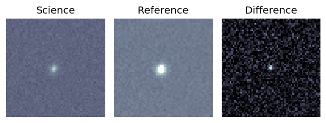
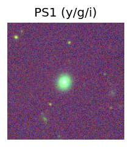
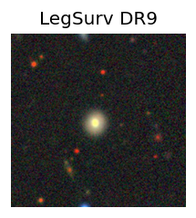
peak abs mag = -19.05 LegacySurvey: 1 sources in 3 arcsec Closest: d = 1.32 arcsec, 261.7 deg (east of north) photoz=0.2 (68% bounds 0.13, 0.28), type=SER peak abs mag = -20.39 (68% bounds -19.37, -21.21) 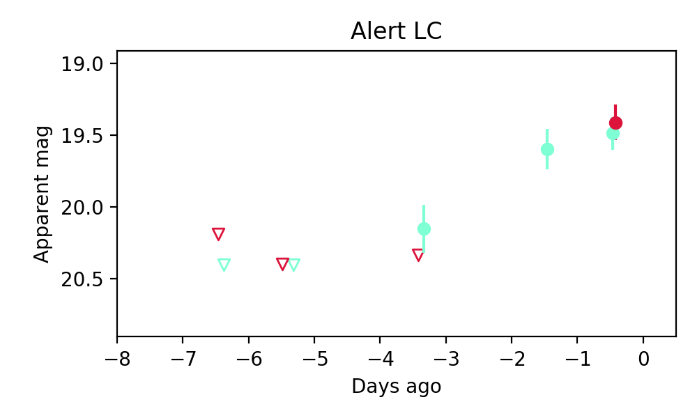
10. ZTF26aamqibe (FBOT?) [Back to Top] [Share] [Trigger Swift] [Fritz ] [Lasair ]RA, Dec: 170.82966, 34.37731 11h23m19.12s, 34d22m38.33sGalactic (l, b): 186.53409, 69.78081 ext(g-r) = 0.026peak abs mag = -18.94 LegacySurvey: 1 sources in 3 arcsec Closest: d = 0.86 arcsec, 53.7 deg (east of north) photoz=0.89 (68% bounds 0.58, 1.15), type=REX peak abs mag = -24.67 (68% bounds -23.56, -25.37)
11. ZTF26aamqluf (Afterglow?) [Back to Top] [Share] [Trigger Swift] [Fritz ] [Lasair ]RA, Dec: 183.74219, 63.7879 12h14m58.13s, 63d47m16.42sGalactic (l, b): 129.58969, 52.86639 ext(g-r) = 0.022peak abs mag = -18.01 LegacySurvey: 1 sources in 3 arcsec Closest: d = 5.62 arcsec, 141.9 deg (east of north) photoz=0.02 (68% bounds 0.01, 0.05), type=PSF peak abs mag = -17.91 (68% bounds -15.43, -19.93) Consistent with synchrotron, g-r>0!
12. ZTF26aamxaiu (FBOT?) [Back to Top] [Share] [Trigger Swift] [Fritz ] [Lasair ]RA, Dec: 117.01148, -1.96954 7h48m2.76s, -1d-58m-10.34sGalactic (l, b): 221.26863, 11.64212 ext(g-r) = 0.051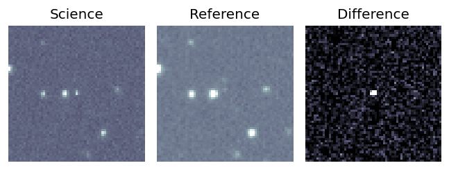
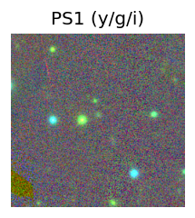
PS1: 1 source in 3 arcsec Closest: d = 1.34 arcsec photoz=0.59+/-0.12 peak abs mag = -23.63 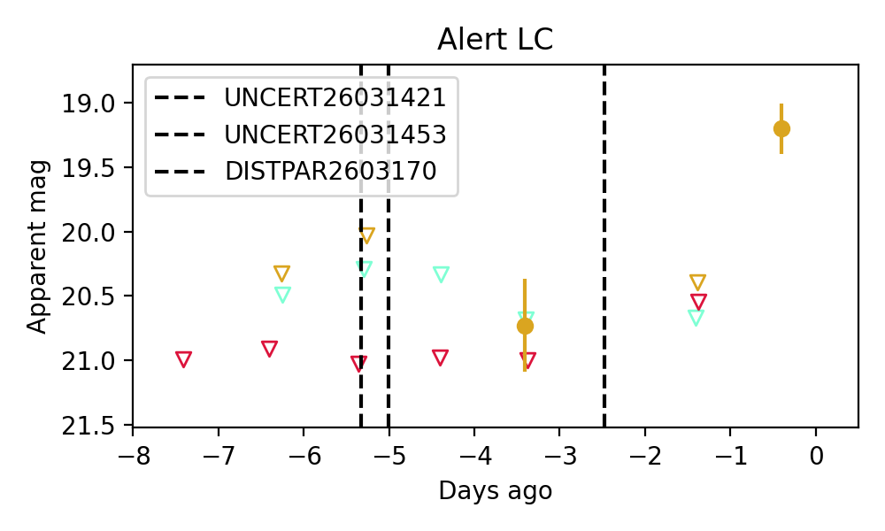
13. ZTF26aamxaln (Afterglow?) [Back to Top] [Share] [Trigger Swift] [Fritz ] [Lasair ]RA, Dec: 109.24502, -0.94022 7h16m58.80s, 0d-56m-24.81sGalactic (l, b): 216.69242, 5.24916 ext(g-r) = 0.135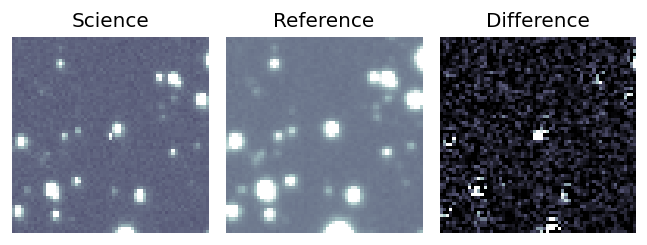
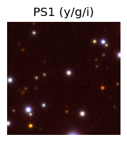
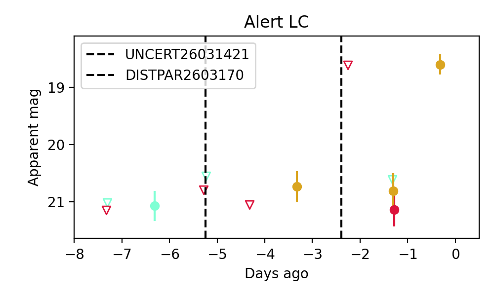
Consistent with synchrotron, g-r>0!
14. ZTF26aamyfkb (Afterglow?) [Back to Top] [Share] [Trigger Swift] [Fritz ] [Lasair ]RA, Dec: 108.96834, 16.86454 7h15m52.40s, 16d51m52.35sGalactic (l, b): 200.38597, 12.88077 ext(g-r) = 0.156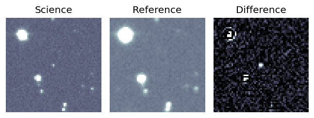
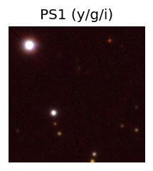
PS1: 1 source in 3 arcsec Closest: d = 9.69 arcsec photoz=0.51+/-0.36 peak abs mag = -23.83 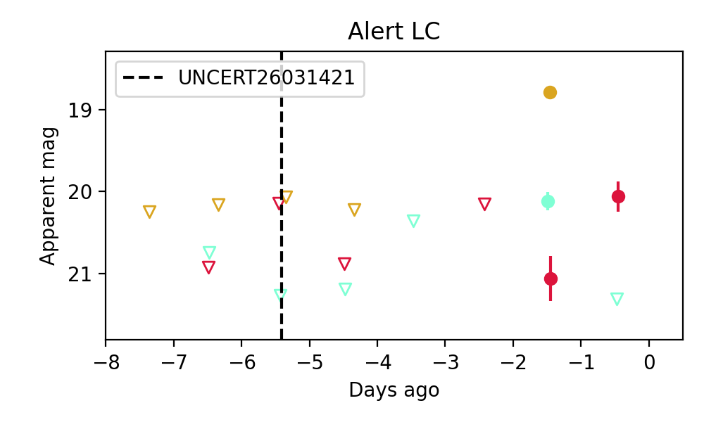
Consistent with synchrotron, g-r>0!
15. ZTF26aamytns (FBOT?) [Back to Top] [Share] [Trigger Swift] [Fritz ] [Lasair ]RA, Dec: 97.22907, 25.50122 6h28m54.98s, 25d30m4.40sGalactic (l, b): 187.68627, 6.74808 WARNING: 2.23 deg from ecliptic plane ext(g-r) = 0.408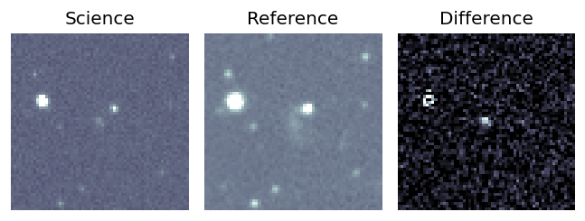
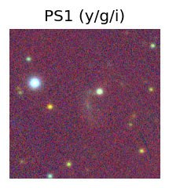
peak abs mag = -18.21 PS1: 1 source in 3 arcsec Closest: d = 1.81 arcsec photoz=0.25+/-0.11 peak abs mag = -21.19 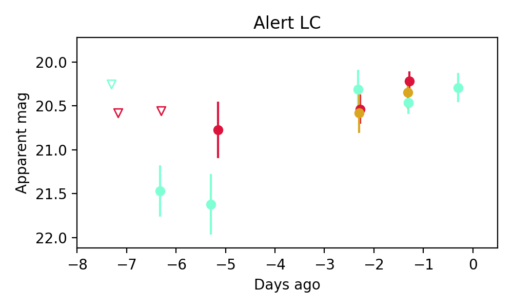
Consistent with synchrotron, g-r>0!
16. ZTF26aamzwjz (FBOT?) [Back to Top] [Share] [Trigger Swift] [Fritz ] [Lasair ]RA, Dec: 144.47008, 28.91776 9h37m52.82s, 28d55m3.92sGalactic (l, b): 198.75597, 47.54536 ext(g-r) = 0.02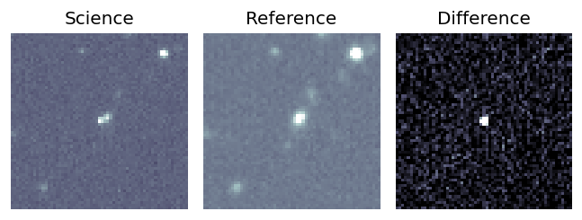
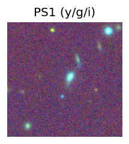
peak abs mag = -20.72 LegacySurvey: 1 sources in 3 arcsec Closest: d = 2.77 arcsec, 287.1 deg (east of north) photoz=0.14 (68% bounds 0.12, 0.16), type=SER peak abs mag = -20.77 (68% bounds -20.36, -21.07) 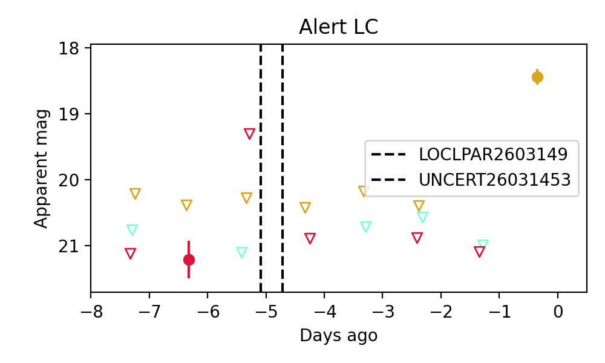
17. ZTF26aanbsyz (FBOT?) [Back to Top] [Share] [Trigger Swift] [Fritz ] [Lasair ]RA, Dec: 155.69708, 6.79962 10h22m47.30s, 6d47m58.63sGalactic (l, b): 236.00035, 49.31049 WARNING: -3.09 deg from ecliptic plane ext(g-r) = 0.025LegacySurvey: 1 sources in 3 arcsec Closest: d = 0.62 arcsec, 340.3 deg (east of north) photoz=0.53 (68% bounds 0.43, 0.65), type=REX peak abs mag = -23.5 (68% bounds -22.95, -24.07)
18. ZTF26aancbfs (FBOT?) [Back to Top] [Share] [Trigger Swift] [Fritz ] [Lasair ]RA, Dec: 161.85319, 23.38396 10h47m24.76s, 23d23m2.26sGalactic (l, b): 213.59837, 61.78027 ext(g-r) = 0.046peak abs mag = -19.74 LegacySurvey: 1 sources in 3 arcsec Closest: d = 2.66 arcsec, 331.1 deg (east of north) photoz=0.16 (68% bounds 0.14, 0.18), type=SER peak abs mag = -19.39 (68% bounds -19.05, -19.67)
19. ZTF26aancjvl (FBOT?) [Back to Top] [Share] [Trigger Swift] [Fritz ] [Lasair ]RA, Dec: 185.29071, -12.03034 12h21m9.77s, -12d-1m-49.21sGalactic (l, b): 291.33202, 50.15829 ext(g-r) = 0.047PS1: 1 source in 3 arcsec Closest: d = 0.16 arcsec photoz=0.30+/-0.14 peak abs mag = -21.16 Consistent with synchrotron, g-r>0!
20. ZTF26aancqfb (Afterglow?) [Back to Top] [Share] [Trigger Swift] [Fritz ] [Lasair ]RA, Dec: 166.56875, -4.17775 11h 6m16.50s, -4d-10m-39.90sGalactic (l, b): 259.86234, 49.69279 ext(g-r) = 0.06
21. ZTF26aanctzk (Afterglow?) [Back to Top] [Share] [Trigger Swift] [Fritz ] [Lasair ]RA, Dec: 177.10107, 4.12491 11h48m24.26s, 4d 7m29.66sGalactic (l, b): 266.99465, 62.51341 WARNING: 2.63 deg from ecliptic plane ext(g-r) = 0.022
22. ZTF26aandgnh (Afterglow?FBOT?) [Back to Top] [Share] [Trigger Swift] [Fritz ] [Lasair ]RA, Dec: 189.72972, 27.7108 12h38m55.13s, 27d42m38.86sGalactic (l, b): 200.37147, 87.16152 ext(g-r) = 0.015LegacySurvey: 1 sources in 3 arcsec Closest: d = 7.08 arcsec, 332.4 deg (east of north) photoz=0.07 (68% bounds 0.01, 0.26), type=PSF peak abs mag = -19.57 (68% bounds -15.99, -22.7)
23. ZTF26aandlfv (FBOT?) [Back to Top] [Share] [Trigger Swift] [Fritz ] [Lasair ]RA, Dec: 198.82671, 48.3447 13h15m18.41s, 48d20m40.93sGalactic (l, b): 112.17015, 68.28175 ext(g-r) = 0.013LegacySurvey: 1 sources in 3 arcsec Closest: d = 1.67 arcsec, 141.5 deg (east of north) photoz=0.44 (68% bounds 0.32, 0.6), type=EXP peak abs mag = -22.35 (68% bounds -21.57, -23.15)
24. ZTF26aaneaps (FBOT?) [Back to Top] [Share] [Trigger Swift] [Fritz ] [Lasair ]RA, Dec: 152.46729, 22.9509 10h 9m52.15s, 22d57m3.23sGalactic (l, b): 210.31763, 53.32035 ext(g-r) = 0.028peak abs mag = -17.50 LegacySurvey: 1 sources in 3 arcsec Closest: d = 0.56 arcsec, 225.1 deg (east of north) photoz=0.5 (68% bounds 0.31, 0.85), type=PSF peak abs mag = -22.72 (68% bounds -21.52, -24.12) Consistent with synchrotron, g-r>0!
25. ZTF26aaneggi (Afterglow?) [Back to Top] [Share] [Trigger Swift] [Fritz ] [Lasair ]RA, Dec: 146.70152, -2.02704 9h46m48.36s, -2d-1m-37.35sGalactic (l, b): 238.64688, 36.86674 ext(g-r) = 0.059peak abs mag = -18.92 LegacySurvey: 1 sources in 3 arcsec Closest: d = 1.41 arcsec, 299.1 deg (east of north) photoz=0.1 (68% bounds 0.08, 0.11), type=SER peak abs mag = -18.72 (68% bounds -18.19, -19.02) Consistent with synchrotron, g-r>0!